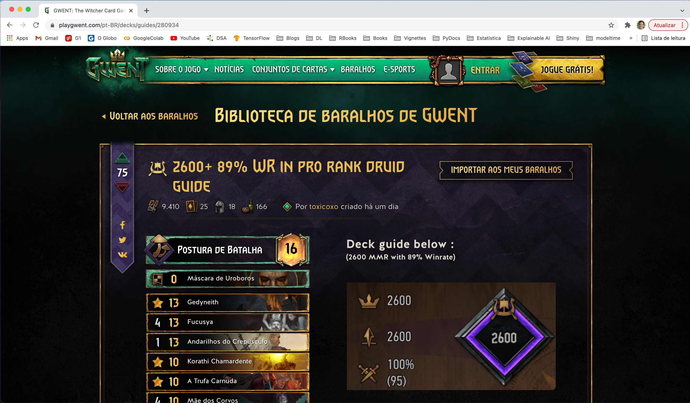

Motivação
The Witcher é uma franquia lançada como uma série de livros de fantasia que contam as aventuras do bruxo (i.e., Witcher) Geralt de Rivia. Essas estórias foram popularizadas através da série da Netflix de mesmo nome e, também, através do jogo para videogames The Witcher 3: The Wild Hunt1. Esse jogo é bastante complexo e tem uma experiência bastante imersiva, trazendo inclusive diversas tradições do universo à ela. Uma delas é o Gwent, um jogo de cartas entre dois jogadores, onde ganha aquele que mais pontuar em pelo menos 2 de 3 turnos. Parece ser um mini-jogo bobo dentro do título, mas ele próprio invoca muito da fantasia da série na disputa.
Gwent é um jogo que lembra muito o Magic, onde você deve construir um baralho de no mínimo 25 cartas pertencentes à uma facção de sua escolha, respeitando algumas restrições (e.g., custo total das cartas no baralho, quantidade de unidades,…). No momento em que escrevo este post, existem cerca de 200 cartas pertencentes à cada uma de 6 facções distintas, além de outras 200 à 400 cartas neutras (i.e., que não pertencem à nenhuma facção) que podem ser usadas para montar um baralho. Existe uma diferença inerente ao modo de jogar com cada facção (e.g., foco em dano direto, foco bloqueio e roubo de cartas,…) e, dentro de uma dada facção, também existe uma pequena diversidade de formas de montar o baralho de forma a fortificar uma estratégia (e.g., cartas que juntas reforçam muito umas as outras, cartas que ajudam a ativar a habilidade de outras cartas mais frequentemente). Neste sentido, montar um baralho forte e consistente passa a ser quase uma arte, mas que poderia ser aprimorado com um pouquinho mais de orientação baseada em dados.
Existe bastante conteúdo na internet que é produzido pela própria comunidade que joga o Gwent. Em particular, a própria comunidade contribui compartilhando a composição de cartas nos seus baralhos, as estratégias de jogo e votando nestas a partir do próprio site oficial do jogo. E é aqui que entra o meu interesse, pois se pudermos obter estas informações e estruturá-las, ficaria muito mais fácil entender os padrões dentro e entre os baralhos e usar isso em favor de aprimorar a jogabilidade. Além disso, acredito que estes dados podem dar um bom modelo de estudo para responder à algumas perguntas e praticar algumas outras técnicas. Falarei sobre essas idéias ao final do post, mas por agora vou mostrar como obter essas informações.
Raspando um deck
Falar da landing page. Mostrar que clica para abrir um deck.
Show code
knitr::include_graphics(path = 'images/imagem_1.jpg')
Falar que se clicar para ver o deck, vai levar para uma pagina uma página com o arranjo abaixo. Falar que o codigo numerico na url é o id do deck. Cada deck vai ter sempre uma habilidade do líder, uma carta de estratégia e pelo menos mais 25 cartas.
Show code
knitr::include_graphics(path = 'images/imagem_3.jpg')

Dizer que o dado que precisamos não está em um API escondida, mas dentro do HTML gerado quando essa pagina carrega. Se olharmos mais a fundo, veremos que as informacoes estao em algo que parece um json dentro de uma tag HTML.
Show code
knitr::include_graphics(path = 'images/imagem_4.jpg')
Falar que vou estruturar o post diretamente nas funções para fazer o scrapper e o parser. Começando pelo scrapper.
## para raspar um deck
scrape_deck <- function(deck_id, path_to_save) {
## fazendo o request e salvando em disco
GET(
url = str_glue('https://www.playgwent.com/pt-BR/decks/guides/{deck_id}'),
write_disk(path = sprintf(fmt = '%s/deck_%06d.html', path_to_save, deck_id), overwrite = TRUE)
)
Sys.sleep(time = runif(n = 1, min = 1, max = 2))
}
Usar a função para scrapear.
# criar diretorio, fazer o download de um deck
Falar do parser para pegar o json.
# para parsear o html do deck para o json
deck_to_json <- function(path_para_deck) {
# lendo o arquivo salvo como html
read_html(x = path_para_deck) %>%
# pegando o xpath onde está o dicionario json
xml_find_all(xpath = '//div[@class="wrapper"]//div[@class="content"]//div[@id="root"]') %>%
# pegando o atributo do dicionario
xml_attr(attr = 'data-state') %>%
# parseando o json
jsonlite::fromJSON(simplifyDataFrame = TRUE) %>%
# pegando o guide
pluck('guide') %>%
# passando tudo para um dataframe
enframe %>%
# pegando so o deck
filter(name == 'deck') %>%
# desaninhando a list column
unnest(value) %>%
# pegando os valores
pull(value)
}
Falar do parser, que precisa de parsear os metadados separado do tooltip. Além disso, falar que dependendo do tipo de carta, o parser deve ser diferente. Mostrar o parser de metadados da carta
# para parsear os metadados de cada carta
parser_card_metadata <- function(deck_json_file, card_type = c('cards', 'stratagem', 'leader')) {
# pegando os metadados da carta
card_metadata <- deck_json_file %>%
# selecionando o tipo de carta
pluck(card_type[1]) %>%
# descartando informacoes que nao precisamos
discard(names(.) %in% c('slotImg', 'slotImgCn', 'previewImg', 'previewImgCn',
'thumbnailImg', 'thumbnailImgCn', 'abilityImg',
'abilityImgCn', 'tooltip'))
# parseando cards
if(card_type[1] == 'cards') {
card_metadata %>%
as_tibble() %>%
unpack(cols = faction) %>%
add_column(card_in_seq = 1:nrow(.), .before = 'craftingCost')
# parseando cartas de estrategia ou habilidade do lider
} else {
card_metadata %>%
bind_cols() %>%
suppressWarnings() %>%
mutate(card_in_seq = if(card_type[1] == 'leader') {-1L} else {0L}) %>%
relocate(card_in_seq, .before = craftingCost)
}
}
Falar do parser do tooltip.
# para fazer o parser do tooltip de cada carta
parser_card_tooltip <- function(deck_json_file, card_type = c('cards', 'stratagem', 'leader')) {
# procedimento para pegar os dados do tooltip para a carta de habilidade lider
if(card_type[1] == 'leader') {
# pegando o tooltip da habilidade do lider e juntando tudo em um tibble so
tooltip_data <- deck_json_file %>%
pluck('leader', 'tooltip') %>%
map(.f = bind_rows) %>%
bind_rows()
# procedimento para pegar os dados do tooltip para as cartas normais ou de estrategia
} else {
tooltip_data <- deck_json_file %>%
pluck(card_type[1], 'tooltip') %>%
map(.f = bind_rows) %>%
enframe(name = 'card_in_seq') %>%
unnest(cols = c(value)) %>%
group_by(card_in_seq)
}
# summarizando os dados de cada tooltip para cada carta
tooltip_data <- tooltip_data %>%
summarise(
keywords = paste0(unique(str_to_lower(string = key[!is.na(key)])), collapse = ';'),
texto = paste0(value, collapse = ' ')
) %>%
# tratando o texto do tooltip
mutate(
keywords = ifelse(test = keywords == '', yes = NA, no = keywords),
keywords = str_to_lower(string = keywords),
texto = str_replace_all(string = texto, pattern = '\\s+', replacement = ' '),
texto = str_replace_all(string = texto, pattern = '\\s:', replacement = ':'),
texto = str_replace_all(string = texto, pattern = '(?<=\\()\\s|\\s(?=\\))', replacement = ''),
texto = str_replace_all(string = texto, pattern = '\\s(?=\\.)|\\s(?=\\,)', replacement = ''),
)
# adicionando identificador numerico para a carta do tooltip e retornando o resultado
if(card_type[1] == 'cards') {
tooltip_data
}
else{
mutate(tooltip_data,
card_in_seq = if(card_type[1] == 'leader') {-1L} else {0L}
) %>%
relocate(card_in_seq, .before = keywords)
}
}
Testar o parser consolidando em uma unica funcao.
# para parsear todas as informacoes do deck
parser_cards <- function(path_para_deck) {
# parseando o json do deck
target_deck <- deck_to_json(path_para_deck = path_para_deck)
# pegando os tooltips de todas as cartas
tooltips <- map_dfr(.x = c('leader', 'stratagem', 'cards'),
.f = parser_card_tooltip,
deck_json_file = target_deck)
# pegando os metadados de todas as cartas
metadados <- map_dfr(.x = c('leader', 'stratagem', 'cards'),
.f = parser_card_metadata,
deck_json_file = target_deck)
left_join(x = metadados, y = tooltips, by = 'card_in_seq')
}
Concluir que agora precisamos de mais decks. Para isso, vamos raspar a lista para pegar o id dos decks.
Raspando a lista de decks
Voltar para a landing page e falar que não tem paginação, que o conteúdo parece ser gerado dinamicamente.
Show code
knitr::include_graphics(path = 'images/imagem_1.jpg')
Mostrar que se abrir o network, vai ver que tem uma API escondida.
Show code
knitr::include_graphics(path = 'images/imagem_2.jpg')

Falar do scrapper da lista.
## para raspar uma lista
scrape_lista <- function(pagina, listas_por_pagina, path_to_save) {
## calculando o offset atraves da pagina que deseja-se pegar
offset <- (pagina * listas_por_pagina) - listas_por_pagina
## fazendo o request e salvando em disco
GET(
url = str_glue('https://www.playgwent.com/pt-BR/decks/api/guides/offset/{offset}/limit/{listas_por_pagina}'),
write_disk(path = sprintf(fmt = '%s/pagina_%06d.json', path_to_save, pagina), overwrite = TRUE)
)
Sys.sleep(time = runif(n = 1, min = 1e-2, max = 1))
}
Falar do uso escalando.
# criar diretorio e baixar umas 5 paginas da lista, aumentando o limit.
Falar da funcao do parser da lista.
## para parseaar uma lista
parser_lista <- function(path_para_lista) {
# carregando os dados como um json
read_json(path = path_para_lista, simplifyDataFrame = TRUE) %>%
# pegando so o elemento da lista que sejam os guides
pluck('guides') %>%
# passando para tibble
as_tibble() %>%
# desempacotando o dataframe column para multiplas colunas
unpack(cols = faction) %>%
# jogando fora o que nao interessa
select(-c(short, thumbnailImg, abilityImg))
}
Qual a tendência do momento?
Mostrar análise do tipo de deck, custo da carta, votos, datas de contribuição e modificação.
Conclusões
Possíveis Extensões
Um dos jogos mais tops que já joguei.↩︎